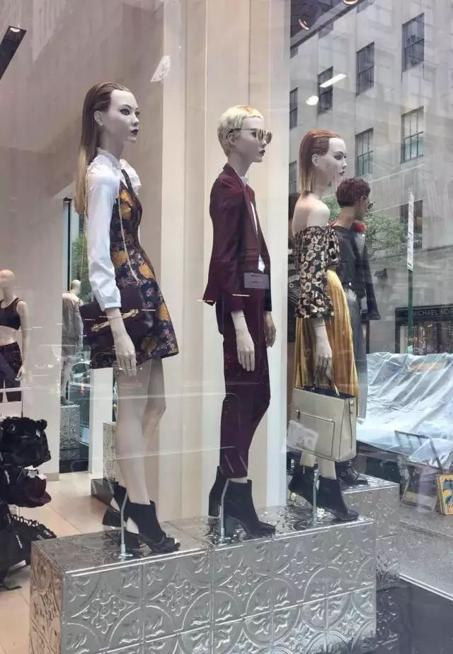
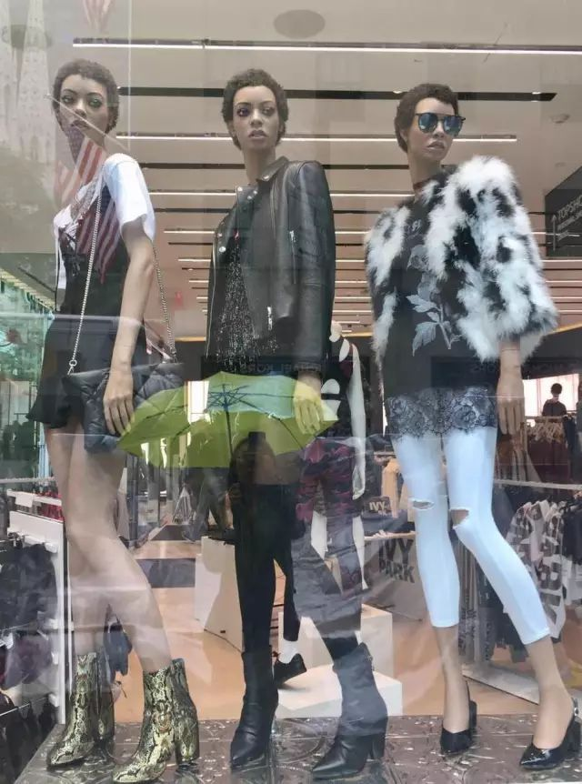
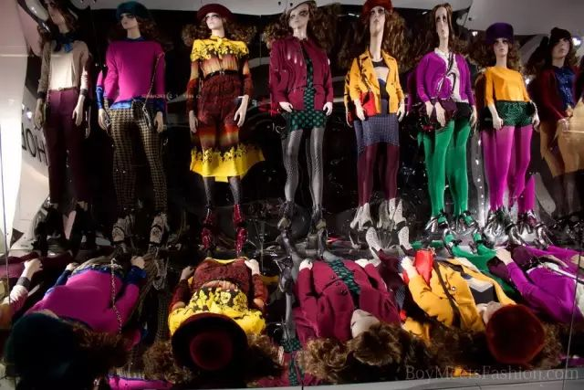
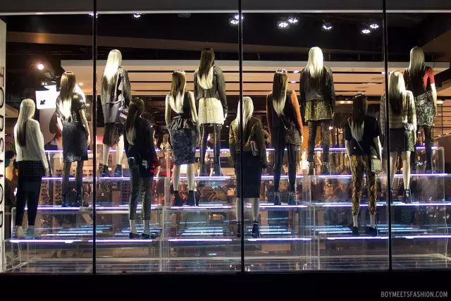
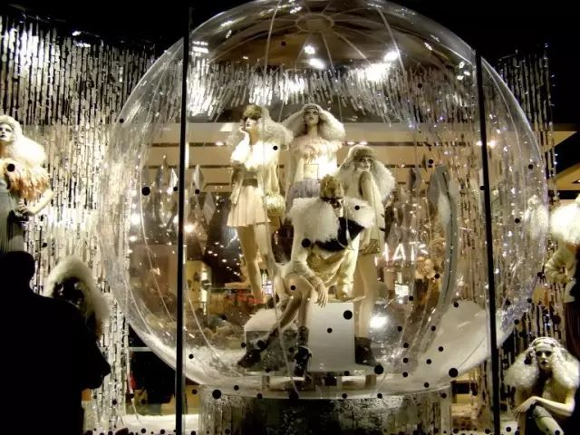
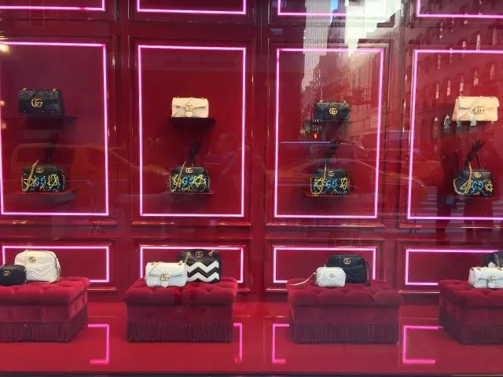
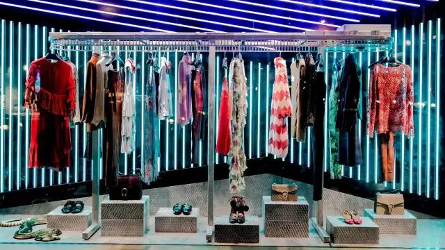
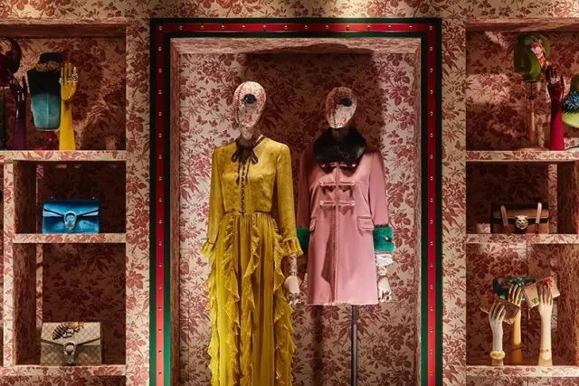
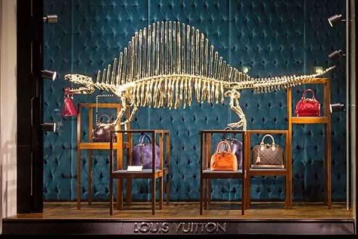
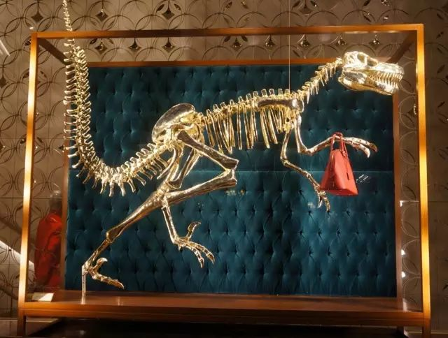

在结束了纽约一周的行程后
逛姐响应着重庆麻辣火锅的号召、经历了6部搞笑电影后终于降落在北京首都国际机场
下飞机之后，只见漫天的云山雾绕、氤氤氲氲
一瞬间错觉飞机导航失误误降到了雾都伦敦。。。
在纽约的最后一天是惯例性的地毯型大采购
为国内的狐朋狗友们寻找他们所需要代购的商品
大到箱包衣物，小到润唇膏护手霜
大部分商品都可以在5th和Madison Avenue上买到
但是两条购物长街走下来双腿也离进厂报废不远了
尽管代购两个字听起来非常Boring，但是逛街却出乎意料地逛得饶有兴趣
原因其实很简单：Window Shopping（橱窗购物）是值得爱逛街星人讴歌的人间福音！（穷人如我发自肺腑的心声）


Let It Go
Demi Lovato – Let It Go
逛姐在10月份的一篇订阅号《拥有绝世好版型的平价牛仔裤品牌大汇总》中曾经
大推特推Topshop的经典系列牛仔裤
作为Topshop的间歇性脑残粉，每次逛姐路过不同城市中的Topshop旗舰店的橱窗都会习惯性地在橱窗前默默矗立三十秒
在第五大道上的Topshop旗舰店并没有通常的背景板
而是以最简单的方式将时髦星人一字排开
用最写实的陈列模式让消费者将自己的诉求代入到模特的造型上

Topshop Window Display

三角造型霓虹色Led灯烘托Rock&Roll少女风格

借助镜面反射将平躺的模特映射到竖立的镜面上
背影杀—借助风格统一但是搭配各异的模特背影吸引过路行人
场景式橱窗设计的典型案例—借助多样化且风格统一的道具打造迷幻类场景
如果平日里你充其量只是时尚圈外的吃瓜群众一枚
但是对于Gucci近两年来80年代欧式复古风的大行其道
相信无论是从出街潮人、明星街拍，还是朋友圈里的微商刷屏的顶级A货都可以或多或少地接触到
Alessandro Michele这个在一年之前还鲜为人知的名字
如今已经成为Gucci文艺复兴风格的创始人
在2016AW系列中，Grandma-chic的Alessandro和美国音乐人兼涂鸦艺术家Trouble Andrew合作创造了Ghost Graffiti（幽灵涂鸦）的一系列单品
逛姐在第一次看到这些涂鸦作品时，心里是不屑的：
切，这样都可以？
尽管如此，最近还是一个人在默默攒钱打算收一个涂鸦链条包。。。（数硬币ing）
Gucci Window Display

80年代霓虹色Led灯拼色背景+Grandma-chic风格服装

Gucci文艺复兴少女风格式场景
花色壁纸+复古首饰架=70年代欧洲橱窗经典重现
将Gucci酒神(Dionysus)系列的经典刺绣蜜蜂放大以创造夸张的视觉冲击
距离Halloween还有半个月的时间，很多Fast- Fashion品牌早已开始售卖万圣节周边产品
从偷懒式骷髅连体衣到俏皮的蕾丝猫女郎发卡
面对即将到来的Halloween午夜游行，真正的万圣节爱好者才不会Copy去年的节日装扮
更惊悚、更有趣、更夸张才是每一个万圣节爱好者的持之以恒的着装准则啊


除了万圣节橱窗之外，骷髅模型也经常被应用到日常的橱窗陈列当中
其中2012、2013年位于巴黎的Louis Vuitton曾两次
将恐龙骨架（霸王龙、剑龙、三角恐龙等）作为橱窗陈列的主题
将早已灭绝的恐龙物种与有着“抗摔、耐造经得起水泡”等美誉的Louis Vuitton箱包
置身于一个现代场景当中
Louis Vuitton“永恒”的中心思想不言而喻得到了升华！
Louis Vuitton Window Display
作为全球规模最大、设计师品牌最多且历史最悠久的婚纱品牌集成店
Kleinfeld在过去的75年中帮助全世界数十万的新娘找到属于她们的那件婚纱
大型真人秀节目《Say Yes to the dress》
是专门为Kleinfeld量身打造
讲述新娘们寻找、试穿直到最终确定那件Dream dress的“惊险”历程
感兴趣的朋友可以翻墙在油管自行搜索
Kleinfeld作为国际婚纱圈的“扛把子”
扛把子的高冷姿态一定要时刻hold住
她们的橱窗设计师应该深谙这点
几乎每一个Kleinfeld橱窗展示都可以脑补出一部剑拔弩张的悬疑惊悚剧
Kleinfeld Window Display


是夜，蒙面神秘西装男夜闯少女闺房
相爱相杀孪生姐妹在阴冷树林的最后一夜
女盗贼乔装礼服暗访博物馆行窃
一场以复仇为目的的婚礼
周旋在两个女人之间的男人的悲惨结局
除了上述独立店铺类型的橱窗设计之外
大型百货商场的节日时期的橱窗早已成为了游客们的必去hot spot与当地人节日生活的重要组成部分
在节日到来时，和三五闺蜜或全家人一起经过整条街明亮又极富戏剧张力的橱窗
隔着一层玻璃窗观察窗内精彩缤纷的奇异世界：镶嵌熠熠宝石的Elie Saab晚礼服、轻盈洁白的Alice+Olivia羽毛外套、Dolce&Gabanna的Vintage格纹羊毛西装套装、从小型城堡模型中不时弹出的Cartier珠宝
这些早已脱离了低级趣味的世界级美貌的代表
虽然在日常生活中鲜有接触但是却没法阻挡我们对终极美的向往
谁说逛街是一项肤浅、只相关物质欲望的活动？
橱窗购物每时每刻向我们提供的免费美学课程难道不是一场绝佳的精神Spa？